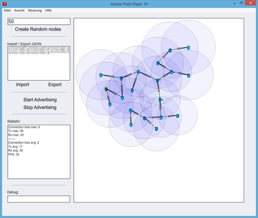

Simulator
The Flash simulator shows a very early stage of our mesh development. It is useful for showing the mesh basics, but does not reflect the current state of our implementation. Have a look at CherrySim for our new simulator.
There is a mesh simulator available in the fruitymesh/sim/ folder that
demonstrates the functionality of the algorithm. You can start it by
either executing the .swf file directly or by opening the html page.

Usage The simulator will start with a basic configuration that
contains a few nodes, the ClusterScore is only calculated by using the clusterSize and the free connections that a node has. You start the Simulation by clicking on Start Advertising. The nodes will then advertise to their neighbours and will connect or disconnect based on the algorithm. You can see some statistics in the textbox in the lower left. You can find info about the individual nodes by hovering over them with your mouse cursor.
For more detailed information on the algorithm have a look at The FruityMesh Algorithm
Modifying the nodes A number of random nodes can be created by
entering their number and clicking on Create Random nodes. Moreover,
you can add a new node by double-clicking anywhere in the empty space of
the simulation. Nodes can be moved via drag and drop and their send
range can be modified by hovering over the node and rotating the mouse
wheel. Removing a node is supported by Alt + Mouse click.